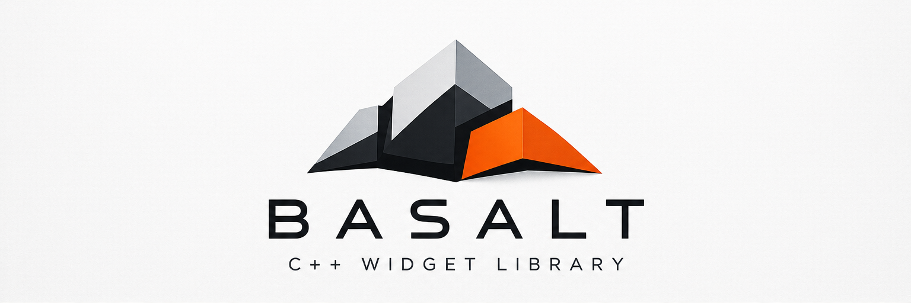

Widgets for C++ applications, without the window system.
Basalt turns a widget tree into paint commands and accessibility snapshots. It follows the Cubit design system. Your application supplies the window, the renderer, and the input.
Features
Basalt covers the parts of a user interface that do not depend on a platform.
Cubit design system
Colors, sizes, and text styles come from Cubit tokens, in light and dark color schemes and several densities.
Many standard widgets
Buttons, text fields, menus, tabs, dialogs, selects, accordions, split views, scroll views, and more.
Unicode text
Font discovery and fallback, HarfBuzz shaping, bidirectional text, and line breaking.
Accessibility built in
Every widget describes itself. Basalt builds an immutable snapshot that a platform bridge can send to assistive technology.
Layout, focus, and input
Two-pass layout, event routing, keyboard focus, and damage tracking for efficient repaints.
Plain CMake
Use FetchContent, add_subdirectory, or an installed package. CI builds with GCC, Clang, Apple Clang, and MSVC.
How it works
Basalt never touches windows, GPUs, or the operating system's input. The same widget tree works with SDL and Skia, with a GPU renderer, or in a test with no window.
Core
Geometry, units, color, theme, the widget tree, layout, events, focus, accessibility, and paint commands.
Text
Font discovery, fallback, shaping, bidirectional text, line breaking, and paragraph layout.
Widgets
The Cubit widgets, built on the core and text layers, plus a base class for your own.
A small example
Make a tree, add widgets, send input, and record paint commands. The host draws the commands with any renderer.
- C++23, with
std::expectedand value semantics - No raw owning pointers; the tree owns its widgets
- Apache License 2.0
auto tree = basalt::widget_tree{
basalt::make_theme(basalt::color_scheme::light)};
tree.set_text_shaper(&shaper);
tree.set_viewport({480, 240});
auto &root = tree.emplace_root<basalt::box>(
basalt::axis::vertical);
auto &status = root.emplace_child<basalt::label>("Clicks: 0");
auto &press = root.emplace_child<basalt::button>(
"Count a click");
press.set_variant(basalt::button_variant::primary);
// Each frame: layout, damage, paint.
tree.update_layout();
tree.take_damage();
basalt::paint_tree(tree, commands);